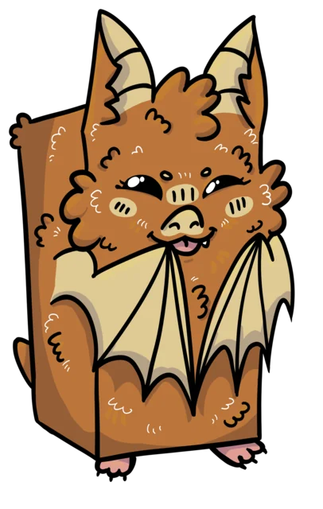
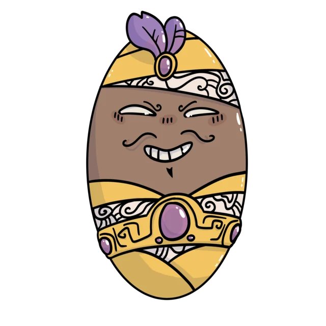

Ball is God?! Поверніть вежу. Станьте ударом.
Хардкорна аркада з вертикальним спуском, де горизонтальне перетягування обертає вежу навколо Espa, що падає. Пропустіть безпечні приземлення, зробіть удар комбо та прорвіться через міфічний світ, де один незахищений удар завершує біг.
Активне виробництво: десять локацій, боси, діалоги з розгалуженнями та шляхи карми, що змінюють правила гри.
Обертанняперетягніть вежу навколо Espa
Ризикпропустіть три безпечні посадки
Ударпрорватися через платформу
Всередині поточної збірки
Карма змінюється більше, ніж діалог.
Світлий, нейтральний і темний шляхи карми змінюють поведінку щитів, попередження про атаки, агресію ворогів і фази босів, тож сюжет впливає на те, як ви граєте.
Статус збірки Активне виробництвоУсі десять світів діалогу
Фони діалогів для всіх десяти світів, у порядку спуску від Ena до Deka.


Поточний робочий інтерфейс
Вибір рівня, діалоги та екрани результатів у поточній збірці.
Це поточний порядок, у якому ви все побачите: вибір рівня, діалог, вибір на етапі, потім перемога або окремий екран поразки. Усі зображення нижче використовують арт із виробничого проєкту Unity.
Небесний маршрут вибирає згенеровані рівні в десяти розділах із 100 рівнями.
Меню виробництва відображає десять локацій у 100-рівневих розділах і відкривається безпосередньо у вибраній серії.

 201
201Діалоги відбуваються просто на локації.
Портрет персонажа, арт локації та табличка мовця зібрані в одній вертикальній рамці.


Shash
Тоді продовжуйте, але не думайте, що це буде легко. На вас чекають Trials, які зроблять усе попереднє здаватися простою дрібницею.
04 / Вибір етапу
Відповідь стає частиною спуску.
На локальних рівнях 90 і 100 спеціальна панель запитує рішення «заощадити або вбити», перш ніж діалог вирішить біг.

Пощадити
Убити
05 / Меню результатів
Перемога веде далі. Поразка повертає до того самого випробування.
Поточна збірка має два окремі стани результатів: PanelWin пропонує повтор і наступний рівень, тоді як PanelOver зберігає одну безпомилкову дію повтору.
Перемога · PanelWin
Спуск пройдено
 Повтор
Далі
Повтор
Далі
Повтор
Далі
Персонажі діалогів
Обличчя зустрілися на шляху вниз.
Нижче наведено всі 25 символів із дійсними парами відкритих і закритих портретів. Наведіть курсор або сфокусуйте картку, щоб змінити вираз.








Огляд гри
Ball is God?! - хардкорна аркада про падіння крізь вежу, що обертається.
Ідея
Проведіть Espa вниз божественною вежею. Одна помилка може урвати забіг, а ваші головні рішення змінюють правила світу.
Поточна збірка
Реалізовано десять сцен локації, процедурне створення вежі, комбо-розбиття, маховий щит, конфігурації босів, розгалуження діалогів, виробничі меню та готові портрети.
Аудиторія
Гравці, яким подобаються складні мобільні аркади, тайминг із ризиком і нагородою та боси, із сюжетом, за яким цікаво стежити.
Статус
Активне виробництво. Нещодавня робота охоплює ігрові системи, графіку світів, тестування та те, як гра почувається на телефоні.
Особливості
Що ви робите в Ball is God?!
Спуск з обертанням перетягуванням
Горизонтальне перетягування обертає вежу навколо Espa, що автоматично падає, вибудовуючи прогалини, небезпеки та безпечні платформи.
Хардкорний аркадний тиск
Один незахищений удар обриває забіг, тому потрібно читати вежу й вивіряти кожен рух.
Боси та міфічні світи
Десять локацій, кожна зі своїми босами, ведуть історію від одного світу до іншого.
Вибір, що змінює правила
Милосердя, сила та карма змінюють діалог, правила щита, ворожу агресію, телеграфи та фази боса.
Цикл ігрового процесу
Як грати в Ball is God?!
- Крок 01Прочитайте спуск
Придивляйтеся до наступних платформ, провалів і небезпек і шукайте безпечні часові вікна під час падіння.
- Крок 02Поверніть вежу
Горизонтальне перетягування повертає світ навколо Espa, вирівнюючи безпечну платформу або навмисне розрив.
- Крок 03Ризик і удар
Пропустіть три платформи, щоб здійснити комбо-розгром, а потім прорвіться крізь структури, поки щит прикриває одну смертельну помилку.
- Крок 04Виберіть наслідок
Милосердя та сила формують карму, діалоги та правила гри переносять у ворогів і босів.
Історія / світ
Міфічна вежа, де ваш вибір падає разом із вами.
Ball is God?! почався з дитячого захоплення мобільними вертикальними аркадами: читання пауз, швидка реакція та інстинкт виживання.
Формат міг вмістити більше: босів, персонажів із характером, сюжет і моральну напругу. Поточний проєкт веде Espa крізь десять локацій і галерею дивних персонажів, а вибір змінює і історію, і ігровий процес.
Так мета перетворилася на просту аркаду з вертикальним спуском, де тиск як у битві з босом, а наслідки як у сюжетній RPG.
- Концепція
- Аркада з вежею, що обертається, і міфічним сюжетом
- Поточний обсяг світів
- Десять локацій і конфігурації боса
- Сюжетна стадія
- Повна чернетка розгорнутого сюжету
- Стан виробництва
- Активне виробництво
Коротко
Просте керування перетягуванням і сюжет, що змінює правила.
Керування обертанням перетягуванням відгукується миттєво. Решту дають міфічні світи, боси та вибори, що змінюють гру.
У поточній збірці вже є детермінована генерація веж, удари з ризиком і нагородою, поразка від одного удару, боси, діалоги з розгалуженнями та карма, що змінює ігровий процес.
- Жанр
- Сюжетна аркада з вертикальним спуском
- Цільова платформа
- iOS / Android
- Формат сесії
- Швидкі забіги на основі навичок
- Студія
- WillowinWorlds
Завантажити ресурси
Ресурси Ball is God?! для преси та творців
Прев’ю WebP для висвітлення в пресі, розгляду видавцями та посилань на сторінку магазину. Вихідні файли в повній роздільності доступні на запит.
Бренд і персонажі
Значок гри плюс усі 25 поточних персонажів, які мають повні портрети діалогів. Імена відповідають ключам локалізації Unity.
EspaПортрет персонажа гравця.
RevlaПортрет діалогу з поточної збірки.
ShashПортрет діалогу з поточної збірки.
ShushПортрет діалогу з поточної збірки.
ShishПортрет діалогу з поточної збірки.
GigoПортрет діалогу з поточної збірки.
GogaПортрет діалогу з поточної збірки.
GigaПортрет діалогу з поточної збірки.
AskoldПортрет діалогу з поточної збірки.
MirasПортрет діалогу з поточної збірки.
HihПортрет діалогу з поточної збірки.
HehПортрет діалогу з поточної збірки.
HahПортрет діалогу з поточної збірки.
MusyaПортрет діалогу з поточної збірки.
DusyaПортрет діалогу з поточної збірки.
SusyaПортрет діалогу з поточної збірки.
VladusПортрет діалогу з поточної збірки.
FrishaПортрет діалогу з поточної збірки.
LurenПортрет діалогу з поточної збірки.
KurenПортрет діалогу з поточної збірки.
Don YagonПортрет діалогу з поточної збірки.
LuryaПортрет діалогу з поточної збірки.
KhleyaПортрет діалогу з поточної збірки.
VaronПортрет діалогу з поточної збірки.
WhiteПортрет діалогу з поточної збірки.
Фони меню
Поточні виробничі ілюстрації, які використовуються системою вибору небесного рівня.

Світи вертикального спуску
Повний набір із десяти фонів поточного місцезнаходження, упорядкованих від Ena до Deka.
 01 · Небесний світФон вертикального спуску Ena.
01 · Небесний світФон вертикального спуску Ena.
 02 · Космічний світФон вертикального спуску Dyo.
02 · Космічний світФон вертикального спуску Dyo.
 03 · Світ буріФон вертикального спуску Tria.
03 · Світ буріФон вертикального спуску Tria.
 04 · Сніжний світФон вертикального спуску Tessera.
04 · Сніжний світФон вертикального спуску Tessera.
 05 · Світ вулканівФон Pente; анімований у грі.
05 · Світ вулканівФон Pente; анімований у грі.
 06 · Світ океануФон вертикального спуску Eksi.
06 · Світ океануФон вертикального спуску Eksi.
 07 · Світ пустеліФон вертикального спуску Epta.
07 · Світ пустеліФон вертикального спуску Epta.
 08 · Світ лісуФон вертикального спуску Ohto.
08 · Світ лісуФон вертикального спуску Ohto.
 09 · Печерний світФон вертикального спуску Ennea.
09 · Печерний світФон вертикального спуску Ennea.
 10 · Пекельний світФон вертикального спуску Deka.
10 · Пекельний світФон вертикального спуску Deka.
Сюжетні аркадні фони
Повний набір локацій для діалогів: Зал Світла плюс фони для всіх десяти світів.
 00 · Зал СвітлаПочатковий фон діалогу.
00 · Зал СвітлаПочатковий фон діалогу.
 01 · Небесний діалогСюжетний фон Ena.
01 · Небесний діалогСюжетний фон Ena.
 02 · Космічний діалогСюжетний фон Dyo.
02 · Космічний діалогСюжетний фон Dyo.
 03 · Штормовий діалогСюжетний фон Tria.
03 · Штормовий діалогСюжетний фон Tria.
 04 · Сніговий діалогСюжетний фон Tessera.
04 · Сніговий діалогСюжетний фон Tessera.
 05 · Вулканічний діалогСюжетний фон Pente.
05 · Вулканічний діалогСюжетний фон Pente.
 06 · Океанічний діалогСюжетний фон Eksi.
06 · Океанічний діалогСюжетний фон Eksi.
 07 · Пустельний діалогСюжетний фон Epta.
07 · Пустельний діалогСюжетний фон Epta.
 08 · Лісовий діалогСюжетний фон Ohto.
08 · Лісовий діалогСюжетний фон Ohto.
 09 · Печерний діалогСюжетний фон Ennea.
09 · Печерний діалогСюжетний фон Ennea.
 10 · Пекельний діалогСюжетний фон Deka.
10 · Пекельний діалогСюжетний фон Deka.
Поширені запитання про Ball is God?!
Поширені запитання про Ball is God?!
Що це за гра Ball is God?!
Хардкорна аркада з вертикальним спуском. Ви обертаєте вежу навколо Espa, що падає, пропускаєте безпечні приземлення, щоб заряджати удари, і прориваєтеся крізь міфічні світи.
Як грати в Ball is God?!
Перетягніть горизонтально, щоб повернути вежу, пропустіть три платформи, щоб завдати удару, і проведіть вертикально, коли щит перезарядки має поглинути смертельний удар.
Чи вже вийшла Ball is God?!
Ще ні. Гра в активному виробництві: ігрові системи, графіка світів, сюжетний контент і тестування. Публічної дати релізу немає. Цільові платформи - iOS і Android.
Чим Ball is God?! відрізняється від інших?
У ній ризик і нагорода створюють аркадну напругу, а десять локацій і карма змінюють діалоги, ворогів, попередження про атаки, щити та босів.
Хто робить Ball is God?!
WillowinWorlds, незалежна студія, що створює мобільні головоломки й аркади.
Чи можна використовувати прес-матеріали Ball is God?!
Так, для преси, розгляду видавцями та посилань на магазини. Вихідні файли залишаються закритими, доки ви їх не попросите.
Ball is God?! Девлог
Що змінилося і коли
- Перевірка поверхонь світу та небезпек
Для подання персонажів, детермінованої генерації та шипів-пасток зробили спільну перевірку візуалу й коректності.
- Липень 2026Доопрацювання інтерфейсу та персонажів
Тепер готові вибір рівнів, спільні кнопки дій, вертикальне подання діалогів і парні вирази облич персонажів.
- Лютий 2026Огляд обсягу проекту
Команда завершила інтеграцію великої історії та переглянула повний масштаб проекту: десять світів, моральний вибір, босів і кілька кінцівок.
- квітень-травень 2025Переписування історії та здібності
Повну історію було переписано, здібності персонажів покращено, а моральні наслідки стали зрозумілішими.
- Серпень 2024Починається робота над сюжетом
Команда вирішила, що Ball is God?! має бути чимось більшим за простий аркадний спуск, і додала міфічний сюжет та ідею морального вибору.
- Липень 2024Оригінальна концепція
Проєкт розпочався як перша ігрова ідея студії: швидка вертикальна аркада про падіння крізь божественну вежу.
- Поточна збіркаАркада й сюжет в одній збірці
Спуск по вежі, що обертається, комбо-удар, щит зі свайпом, боси, діалоги та карма тепер працюють разом в одній збірці.